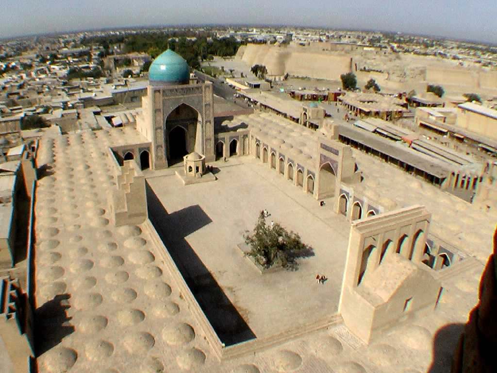
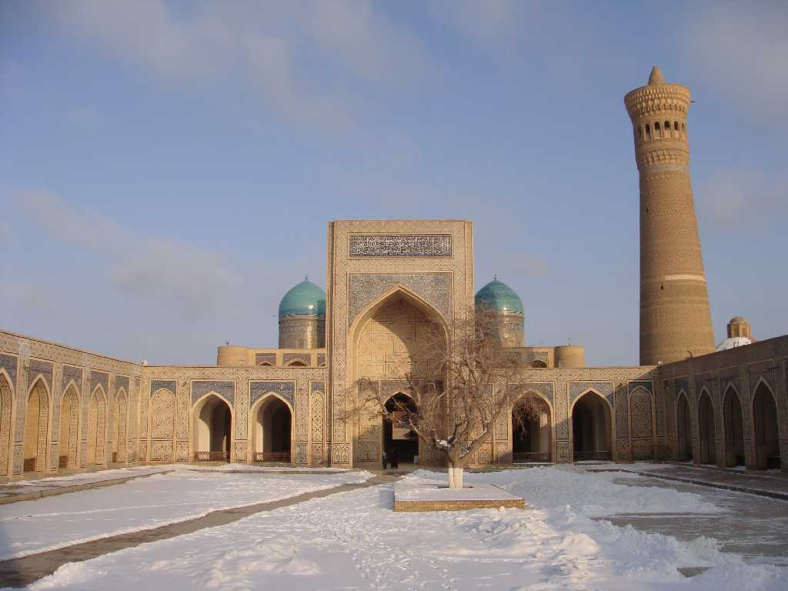
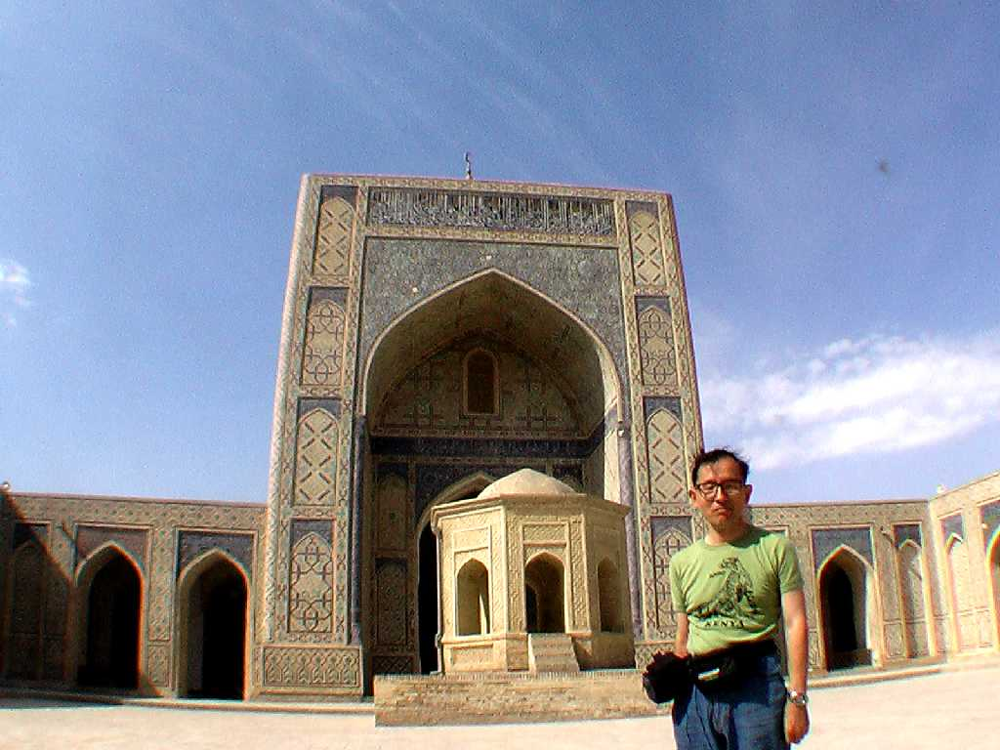

Kalyan mosque on minaret Bukhara
紀元前５世紀には城壁を持つオワシス都市が成立しており紀元前後にはソグド人の都市国家が東西交易の拠点とした ８世紀にはウマイヤ朝に征服されイスラム化が進み１０世紀にサーマーン朝の首都として１６世紀にはブハラハン国の首都として繁栄した

Kalyan mosque & minaret Bukhar
カラーンモスクはウマイヤ朝時代に建造され1haある大モスクで１万人が礼拝できる広さを誇りカラーンミナレットは１２世紀に建造され高さ４６ｍとブハラ一高い

September 28 2008 Kalyan mosque